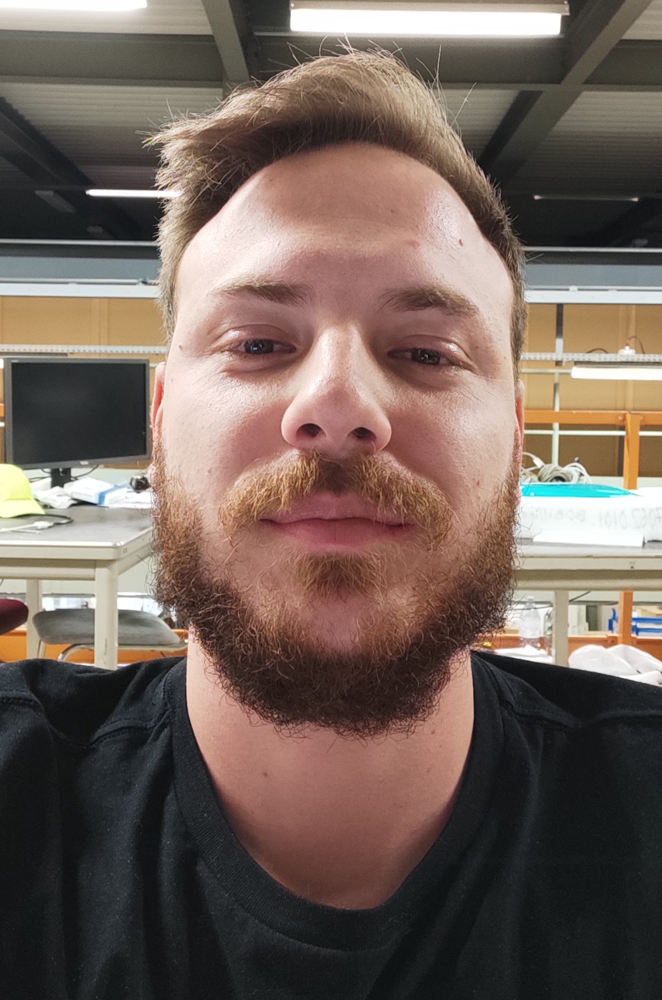

|  |
Stamatis TzanosApplied PhysicistControl System Engineer |
Email: stamatios.tzanos@gmail.com |
Passionate applied physicist immensely fascinated by
industrial automation, electronics
and data science.
Deeply inspired from the applications of physics in
control systems
and industrial instrumentation while
having a strong background in programming, mathematics
and electronics.
| Control Systems Engineer | Inaccess, Jan. 2022 - present (full time) |
Development of control applications for
|
|
| SCADA Engineer: Magnetic Field Monitoring | CERN, Sep. 2020 - Dec. 2021 (full time) |
Responsibilities:
|
|
| SCADA Engineer: Detector Gas System Monitoring | CERN, Apr. 2021 - Dec. 2021 (full time) |
Responsibilities:
|
|